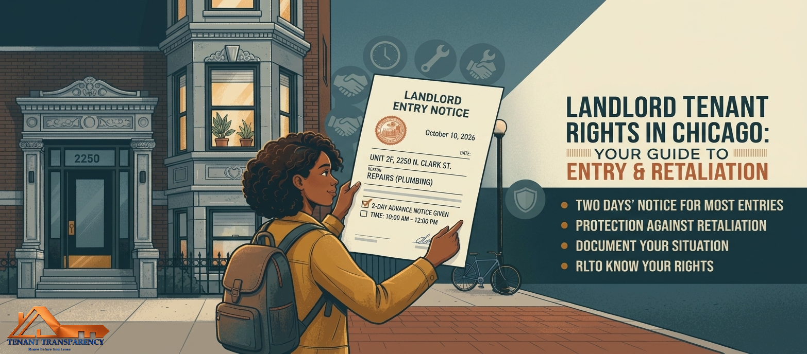

Landlord Entry, Retaliation and Your Right to Complain in Chicago
Updated October 2026 · Part of the Chicago Renters' Rights series

Landlords generally need to give two days' notice before entering, and tenants are protected from retaliation for exercising their rights.
This is not legal advice.
This article explains general rules under the Chicago Residential Landlord and Tenant Ordinance (RLTO) for informational purposes only. Entry and retaliation disputes turn on specific facts, dates and documents. If you think your landlord has entered unlawfully or is punishing you for speaking up, talk to a licensed Illinois attorney or a tenant rights organization.
At a glance
Your landlord needs at least two days' notice to enter for most reasons. Emergencies and unexpected building repairs are the main exceptions.
Entry between 8:00 a.m. and 8:00 p.m. is presumed reasonable. Entry outside those hours is not, unless it is an emergency or you asked for it.
A landlord cannot use access to harass you. A tenant who suffers unlawful entry may recover up to one month's rent or twice their damages, whichever is greater.
Landlords cannot retaliate against you for good-faith complaints, repair requests or organizing. If it happens within a year after your protected activity, the law presumes retaliation unless the landlord rebuts it.
Retaliation remedies include a defense to eviction and recovery of up to two months' rent or twice your damages, whichever is greater, plus attorney's fees.
1. Two rights that pull against each other
A rental unit is your home, and it is also the landlord's property. Chicago law handles that tension in two ways. It gives the landlord a defined right to enter for legitimate reasons, and it gives you the right to be left alone otherwise. Separately, it protects your right to complain about the unit, ask for repairs and organize with neighbors without being punished for it.
Both sets of rules come from the RLTO. Entry is in Sections 5-12-050 and 5-12-060. Retaliation is in Section 5-12-150. They show up together in real disputes more often than people expect: a tenant asks for a repair, the landlord's visits suddenly become frequent, and then a non-renewal notice arrives. Understanding both lets you see the pattern.
As always, check that the RLTO covers your unit. Owner-occupied buildings with six or fewer units are generally exempt from most of it. Our coverage checker takes a minute.
2. The entry rules
Reasons a landlord can enter
The ordinance recognizes legitimate reasons for entry, and a tenant may not unreasonably withhold consent for them. They include:
Necessary or agreed repairs, and supplying necessary or agreed services
Inspections, including inspections required by the government
Showing the unit to buyers, lenders, workers or contractors
Showing the unit to prospective tenants, but only within 60 days before your lease expires
Unexpected building repairs that make entry a practical necessity
Checking on compliance with the lease
Emergencies
A landlord cannot abuse the right of access or use it to harass you. A pattern of visits with thin reasons is a different thing from a single legitimate repair.
Notice
For most of those reasons, the landlord must give at least two days' notice. The ordinance allows notice by mail, by phone, in writing, or by other reasonable means given in good faith. It does not require a particular form, which is why a text, an email or a posted note can count. A single general notice can cover repairs to common areas.
The exceptions are emergencies and unexpected building repairs that make entry a practical necessity. The landlord can enter without advance notice in those cases but must give notice within two days after the entry.
Time of day
Entry must be at reasonable times, except in an emergency. Entry between 8:00 a.m. and 8:00 p.m. is presumed reasonable, as is entry at any time you request. Entry outside those hours for a routine reason is not presumed reasonable, and you can object.
What the standard lease adds
The common Chicago lease form follows the two-day rule and adds a few things. It allows entry to show the unit with two days' notice, and it lets the landlord take marketing photos or video. It lets routine notices, including entry notices, go to the email address on file. It lets you change the locks as long as you promptly give the landlord a copy of the new key. Read those clauses against the rules above. A lease clause that gives the landlord broader access than the ordinance does not override it. See our lease red flags guide.
Remedies when entry rules are broken
Section 5-12-060 deals with improper access. If your landlord makes an unlawful or unreasonable entry, or makes repeated unreasonable demands for access that harass you, you can seek a court order, or end the lease under Section 5-12-110(a), and you can recover up to one month's rent or twice your actual damages, whichever is greater. The ordinance also addresses tenants who unreasonably refuse lawful access, which is one more reason to offer an alternate time instead of simply saying no.
3. Free tool: Entry Notice Checker
No signup. Runs in your browser and nothing is sent anywhere. Describe an entry or an upcoming visit, see whether it appears to meet the ordinance's notice and timing rules, and download a dated log and a short letter you can send.
4. Common entry situations
A same-day text for a routine repair
At 7:00 a.m. your property manager texts that a plumber will arrive at 9:00. The repair is real, but there is no emergency. Two days' notice is the rule for repairs, and 7:00 notice for a 9:00 visit does not meet it. You may agree to the visit if it suits you, but you are not required to, and agreeing does not waive the rule for next time. A short written reply proposing a day at least two days out keeps the record clean.
A burst pipe from the unit above
Water is coming through your ceiling and the manager lets themselves in to shut off the valve. That is an emergency, and the notice requirement does not apply. The landlord should still tell you what happened, and a record of the date and what they did protects you if there is damage to your belongings.
Showings in the final stretch of a lease
Your lease ends in 40 days and the landlord wants to show the unit to prospective tenants. That is inside the 60-day window, so showings are allowed with two days' notice at reasonable times. If the lease ends in four months, showings to prospective tenants are outside the window and you can decline.
Weekly "inspections" after you asked for repairs
You send a written repair request. The landlord then schedules a visit every week for a month, each time citing "checking lease compliance." Each visit may satisfy the notice rule on its own, but the pattern after a complaint is the kind of repeated demand that can amount to harassment, and it may also be evidence in a retaliation claim. Keep the log.
Entry while you are at work
You come home and find a note that someone was in the apartment. Check whether you had notice. If not and there was no emergency, document it: date, time, what changed. The notice rules do not say you must be home for a properly noticed entry, but you can ask the landlord to schedule when you can be there.
5. When your landlord enters improperly
Record what happened. Date, time, who entered, what you noticed, any notice you did or did not receive, and any witnesses. Take photos if anything was moved or damaged.
Check the rules. Run the entry checker above. It tells you which of the notice, timing and reason rules the entry appears to have broken.
Put your objection in writing. A short, calm note by email or letter. State the date, say what notice you did or did not receive, say you expect two days' written notice for non-emergency entry, and ask for a contact for scheduling. Keep a copy.
Do not lock out or block legitimate repairs. A landlord who gives proper notice for a real repair is entitled to access, and blocking it can hurt your own habitability claim. Offer an alternate date within a reasonable window instead of refusing.
Escalate if it repeats. A tenant rights organization or attorney can tell you whether the pattern supports a claim under 5-12-060. In an emergency or if you feel unsafe, call 911.
6. What counts as retaliation
Section 5-12-150 says it is against public policy for a landlord to take retaliatory action against a tenant. A landlord may not knowingly do any of the following because the tenant did something protected:
Terminate the tenancy, or threaten to
Increase the rent
Decrease services
Sue, or threaten to sue, for possession
Refuse to renew the lease
What is protected
The tenant's activity must be in good faith. Protected activity includes:
Complaining to a government agency or official that enforces housing or health codes, such as calling 311 about heat or filing a Department of Buildings complaint
Complaining about code violations or illegal practices to a community organization or the news media, or seeking their help
Asking the landlord to make repairs the law requires
Joining or organizing a tenant union or similar group
Testifying about the condition of the premises in a court or administrative proceeding
Exercising any other legal right or remedy, such as using repair-and-deduct after proper notice
What is not covered
The protection does not shield a tenant from consequences for their own violation of the lease or the law. Unpaid rent, serious lease violations and damage the tenant caused are legitimate grounds, and a landlord can act on them. The question in a retaliation dispute is usually why the landlord acted, and when.
7. The one-year presumption
This is the most useful part of the ordinance for tenants. If you engaged in protected activity within one year before the landlord's alleged retaliation, that timing creates a rebuttable presumption that the landlord's action was retaliatory. The landlord then has to show a legitimate reason. The presumption does not arise if your protected activity began after the landlord's action.
That order matters. If the landlord served a termination notice in March for nonpayment, and you called 311 in April, the call does not create a presumption against the March notice. The reverse, a 311 call in March and a non-renewal in April, does.
Remedies
A defense in a possession case. If the landlord sues to evict you in retaliation, retaliation is a defense.
Possession or termination. You can recover possession of the unit or end the lease.
Money. Up to two months' rent or twice your actual damages, whichever is greater.
Attorney's fees. Reasonable attorney's fees are recoverable.
Deposit and prepaid rent. If the lease ends, the landlord must return the deposit with interest, and any prepaid rent.
8. Free tool: Retaliation Timeline Builder
No signup. Runs in your browser and nothing is sent anywhere. Enter your protected activity and the landlord's action. The tool checks the order and spacing of the dates against the one-year presumption, estimates the upper limit of the money remedy, and downloads a timeline you can bring to an attorney.
9. Retaliation examples
Heat complaint, then non-renewal
You report no heat to 311 on January 12. On March 20 the landlord sends a notice that your lease will not be renewed. The protected activity is two months before the landlord's action, well inside a year, so the presumption arises. The landlord has to show a legitimate reason, such as a documented plan unrelated to your complaint.
Repair request, then a rent increase
You send a written repair request in June. In July you get a rent increase notice. A rent increase is on the list of retaliatory acts. The landlord may respond that a building-wide increase was planned and sent to every tenant, and evidence that the increase predated your request and applied to everyone helps them. Evidence that you alone were singled out helps you.
Tenant union, then reduced services
You help organize a tenant association. The next month, package delivery stops, laundry hours are cut and the landlord stops answering maintenance requests for tenants who signed on. Decreased services is a listed retaliatory act, and joining or organizing a tenant union is a listed protected activity. Document each change.
Complaint after the eviction filing
The landlord files for possession in April over unpaid rent. In May you call 311 about the heat. The complaint came after the filing, so the presumption does not arise against that case. Habitability facts may still matter to the case on other grounds. See our eviction guide.
Nonpayment with a real basis
You withhold rent without following the notice process, then complain to the City. Retaliation does not protect you from legitimate consequences of unpaid rent. Follow the 14-day written notice steps in our habitability guide before withholding, so you are acting within your rights.
10. Building your record
Retaliation cases are won on dates. A clean timeline, backed by documents, turns "he got angry after I complained" into "here is what happened and when."
Protected activity: your 311 service request number, the date of any Department of Buildings complaint, a copy of your written repair request, proof of how and when you delivered it, meeting minutes or sign-in sheets from tenant organizing, and the name of any reporter or group you contacted.
Landlord's action: the notice itself, the envelope or the email with its date, the date you received it, and any text or voicemail that explains the reason.
Pattern: a log of every entry, with date, time and notice, and a record of any change in services or in how maintenance requests are handled.
Comparison: if you suspect you were singled out, note what your neighbors received. A rent increase sent to one unit is different from one sent to the whole building.
Everything in writing. If you reach the landlord by phone, follow up by email so there is a record of what was said.
Download the timeline from the tool above, add your documents to the same folder, and bring all of it to a tenant rights organization or attorney.
How much notice does a Chicago landlord have to give before entering?
At least two days for most reasons, by mail, phone, writing or other reasonable good-faith means. Emergencies and unexpected building repairs that make entry a practical necessity are the exceptions, and notice is due within two days after the entry.
What hours can my landlord enter?
Entry must be at a reasonable time. Entry between 8:00 a.m. and 8:00 p.m., or any time you request, is presumed reasonable.
Can I refuse to let my landlord in?
You cannot unreasonably withhold consent for a legitimate, properly noticed entry. You can object to entry without proper notice, outside reasonable hours, or for a reason the ordinance does not support, and you can propose another time.
What can I do if my landlord enters without notice?
Document it, object in writing, and ask for proper notice going forward. For unlawful or unreasonable entry, or repeated harassing demands, the ordinance lets you seek a court order or end the lease, and recover up to one month's rent or twice your damages, whichever is greater.
What is retaliation under Chicago law?
A landlord ending your tenancy, raising rent, cutting services, suing or threatening to sue for possession, or refusing to renew because you did something protected in good faith, such as complaining to the City, asking for repairs or joining a tenant union.
Is there a time limit on the retaliation presumption?
Protected activity within one year before the landlord's act creates a rebuttable presumption of retaliation. If your activity came after the landlord's act, there is no presumption.
What can I recover for retaliation?
A defense to a retaliatory eviction case, possession or termination of the lease, up to two months' rent or twice your damages (whichever is greater), reasonable attorney's fees, and return of your deposit with interest and any prepaid rent if you end the lease.
Does retaliation protection apply if I owe rent?
It does not protect a tenant from consequences of their own violation of the lease or the law, including unpaid rent. It does protect a tenant who is current and acts in good faith.